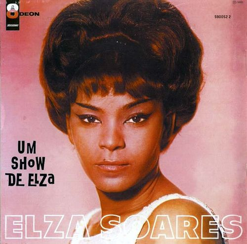

Artistas Negros Brasileiros
Diário de um Detento
Racionais MC's
Retrato cru do sistema carcerário brasileiro e da vida nas periferias

A Carne
Elza Soares
Canção potente que denuncia o racismo e a violência contra corpos negros
Religiões Afro-brasileiras
Canto de Ossanha
Baden Powell e Vinicius de Moraes
Homenagem ao orixá das folhas e da medicina na cultura afro-brasileira